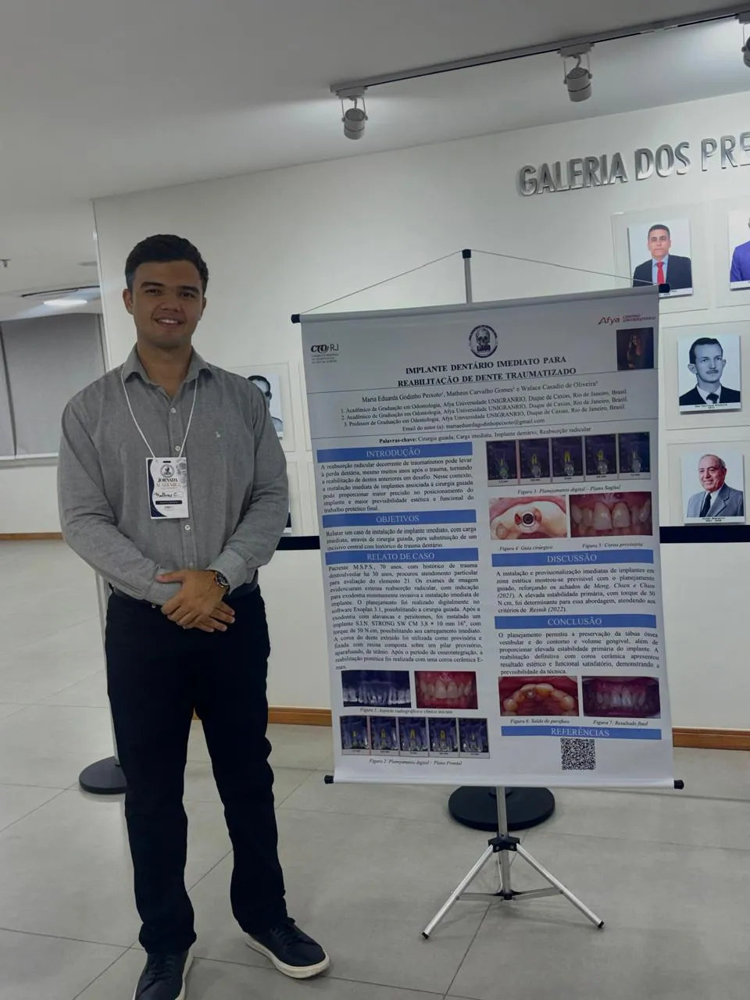

Implante dentário imediato para reabilitação de dente traumatizado
- Formato
- Painel científico (relato de caso)
- Evento
- Jornada Acadêmica de Cirurgia e Traumatologia Bucomaxilofacial, LIACO, Liga Acadêmica de Cirurgia Oral Afya Unigranrio
- Local e data
- CRO-RJ, 10 de setembro de 2026
- Autores
- Maria Eduarda Godinho Peixoto e Matheus Carvalho Gomes, com orientação do Prof. Walace Casadio de Oliveira
O trabalho relata a substituição de um incisivo central superior com extensa reabsorção radicular, consequência de um trauma dentoalveolar ocorrido 30 anos antes. O planejamento foi feito digitalmente no software Exoplan 3.1, o que permitiu realizar a cirurgia guiada.
Após uma exodontia minimamente invasiva, o implante foi instalado com torque de 50 N·cm, estabilidade suficiente para a carga imediata. A coroa do próprio dente extraído serviu de provisória sobre um pilar de titânio e, após a osseointegração, a reabilitação foi concluída com uma coroa cerâmica E.max.
O planejamento guiado preservou a tábua óssea vestibular e o contorno gengival, com resultado estético e funcional satisfatório.